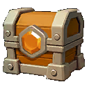
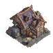
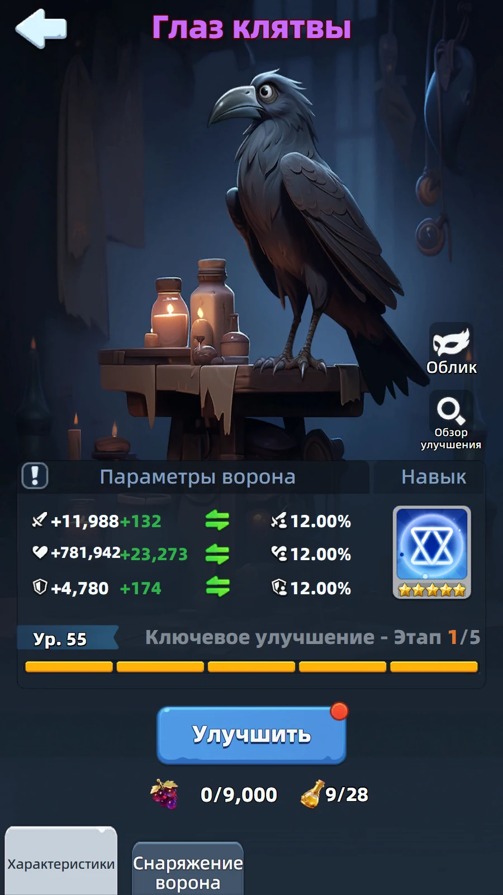
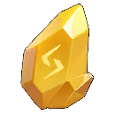
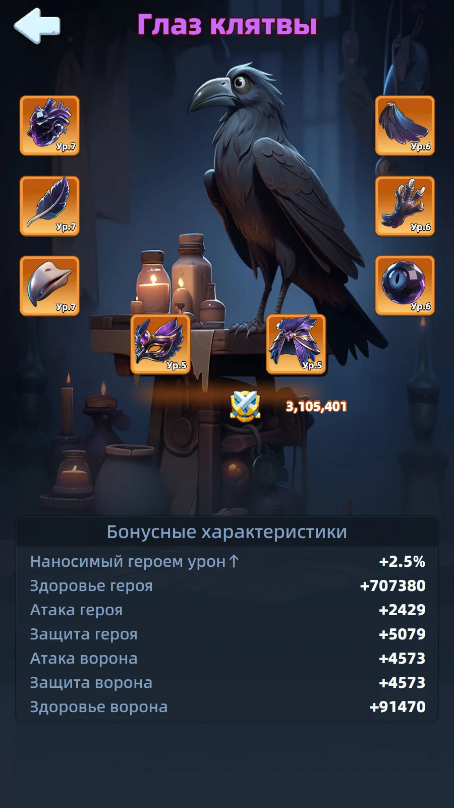
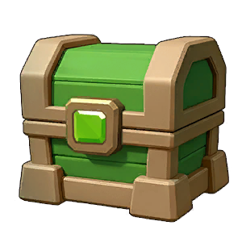
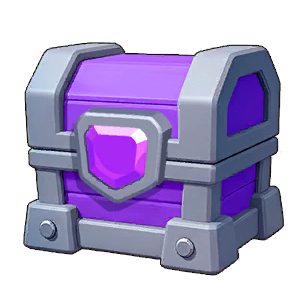
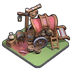
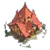
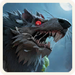

Ворон
ВоронВорон: питомец, который усиливает всех героев сразу
Ворон сам не воюет как отдельный отряд. Его характеристики прибавляются ко всем твоим героям, а его навык бьёт врагов в каждом бою. Поэтому прокачанный ворон — это плюс ко всем отрядам одновременно.


Вороньи плоды
Поднимают уровень ворона. Тратить в понедельник (день Ворона в Дуэли).

Воронья эссенция
Нужна для ключевого улучшения раз в 10 уровней. Тоже тратить в понедельник.

Сундуки снаряжения ворона
Открывать в среду: сундук 7 уровня = 810 000 очков Дуэли.

Эпиграфы — с ~78-го дня сервера
Вставки, которые усиливают отряд одной фракции. Первый отряд — после 1-го ключевого улучшения.
Три здания ворона — что делает каждое

Гнездо ворона
Главное здание. Здесь сам ворон: уровень, снаряжение, ключевое улучшение и эпиграфы. Внизу окна 4 вкладки: «Характеристики», «Снаряжение ворона», «Обзор улучшения», «Облик».

Мастерская ворона
Сама понемногу производит вороньи плоды. Заходи и собирай. Чем выше уровень мастерской, тем больше плодов.

Мастерская эпиграфов
Открывается примерно на 78-й день сервера (раньше её в городе нет). Здесь делают и улучшают эпиграфы. С 15 уровня можно делать фиолетовые эпиграфы.
Как поднять уровень ворона — по шагам
Нажми на здание в городе. Откроется окно с вороном, как на картинке слева.
Слева — что ворон даёт героям сейчас, зелёным — сколько прибавится за следующий уровень. Справа — значок навыка ворона.
Под кнопкой видно цену: виноград — вороньи плоды, бутылка — эссенция. Слева от косой черты — сколько у тебя есть, справа — сколько нужно. Например «0/9,000» = плодов нет, а нужно 9 000. Цифра красная — не хватает.
Полоска «Ключевое улучшение — Этап 1/5» заполняется. Когда дойдёт до конца, ворон не растёт дальше, пока не потратишь эссенцию. В английских гайдах это называют «эволюцией».

Окно ворона — вкладка «Характеристики» (внизу слева). Под кнопкой «Улучшить» — цена: вороньи плоды (виноград) и эссенция.

Когда тратить. Плоды и эссенцию всю неделю копи, а трать в понедельник: это день «Ворон» в Дуэли альянсов, за то же самое альянс получит очки. Если в это же время идёт тема «Ворон» в Битве на выживание, то 10 плодов = 1 очко, 1 потраченная энергия = 100 очков. Подробно — Дуэль.
Что ворон даёт героям — в цифрах
Эти прибавки получает каждый твой герой, а не один.
| Уровень ворона | Здоровье каждому герою | Атака | Защита |
|---|---|---|---|
| 50 | +84 094 | +1 327 | — |
| 100 | +443 374 | +4 220 | +3 154 |
| 150 | +1 335 885 | +10 833 | +9 811 |
| 250 | +2 679 053 | +20 964 | +19 772 |
Навык ворона
В бою ворон бьёт двух врагов, у которых больше всего здоровья (обычно это их танки), сильным физическим ударом. Чем выше уровень ворона, тем больше эффектов у навыка: с 30 уровня цели получают на 12% больше урона, на 50 — ещё +18% урона, дальше бонусы растут до 36%.
Снаряжение ворона: что сначала
Носить можно только по одной вещи в каждом слоте. Все лишние — сливай в те, что надеты.
Шесть мест по бокам (слева Сердце мудрости, Перо ночи, Острый клюв; справа Хвост ветра, Атакующий коготь, Глаз восприятия) дают больше пользы за те же материалы. Подними их до 7 уровня и только потом качай два нижних места посередине.
Они дорогие. Если начнёшь с них, боковые долго будут слабыми.


Вкладка «Снаряжение ворона».
Эпиграфы — вставки, которые усиливают отряд
открываются эпиграфы
Эпиграф — это такой камень с бонусом, который вставляют в ячейки ворона. Каждая ячейка работает на свой отряд.
Отряд 1
Ячейки открываются после 1-го ключевого улучшения.
Отряд 2
После 2-го ключевого улучшения (примерно 150 уровень ворона).
Отряд 3
После 3-го ключевого улучшения (примерно 300 уровень).
Главное правило: фракция эпиграфа = фракция отряда. Эпиграф Воина работает только на отряд из Воинов. Поставишь его на отряд Колдунов — бонус не сработает. Какая фракция у твоих отрядов — смотри в Отрядах.
4 вида эпиграфов — как они называются в игре
Редкость видна по цифре в названии: I — R, II — SR, III — SSR, IV — UR. Например «Защитный оберег IV (воин)» — золотой, только для Воинов. Танкам — Защитный оберег и Страж природы, героям урона — Неистовая стая. Лучше один полный набор, чем четыре недоделанных.





Так в игре выглядят сундуки эпиграфов — от зелёного (слабый) до золотого (самый сильный).
Сундуки с эпиграфами открывай в понедельник — это тоже очки Дуэли за день Ворона.
Где брать плоды, эссенцию и снаряжение ворона
| Где | Что даёт |
|---|---|
| Мастерская ворона | Плоды — сама, каждый день. Не забывай собирать. |
 Магазин альянса Магазин альянса | Предметы ворона за монеты альянса. Магазин обновляется в понедельник. |
 Магазин экспедиции | Сундук снаряжения ворона 3 уровня — покупается за медали экспедиции. |
| VIP-магазин | Эссенция. |
 Магазин чести Магазин чести | Предметы ворона (но первыми покупай чертежи снаряжения). |
 Магазин святилища | Предметы ворона. |
 Поиск вора Поиск вора | Эссенция и снаряжение ворона. Раз в 2 недели — как проходить. |
 Сырная ловушка | Награды для ворона. Через день — как проходить. |
Ошибки с вороном
Пока не сделано ключевое улучшение, ворон стоит на месте. Эссенция в сумке силы не даёт.
Бонус просто не работает. Сверь фракцию отряда.
Дорого и долго. Сначала боковые до 7 уровня.
Один полный набор эпиграфов сильнее четырёх недоделанных.
Ворон вырос, а Дуэль очков за это не дала. Жди понедельника.